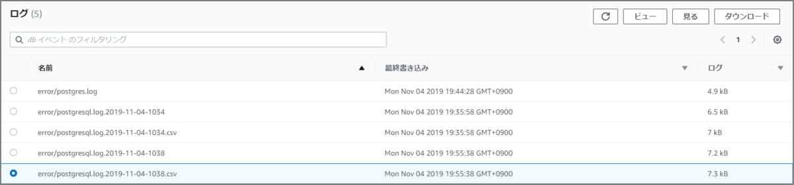

Aurora(PostgresSQL)のスロークエリログの出力方法
1.バージョン確認
aurorapostdb=> select version();
version
-----------------------------------------------------------------------------
PostgreSQL 10.7 on x86_64-pc-linux-gnu, compiled by gcc (GCC) 4.9.3, 64-bit
(1 row)
2.パラメータグループを変更
19.8. エラー報告とログ取得 https://www.postgresql.jp/document/10/html/runtime-config-logging.html
log_statement=all #どのSQL文をログに記録するかを制御
log_min_duration_statement=0 #0に設定すれば、すべての文の実行時間が出力
log_destination=csvlog #csvlogがlog_destinationに含まれる場合、ログ項目はプログラムへの読み込みが簡便な"カンマ区切り値"書式（CSV）で出力
log_duration=1
log_error_verbosity=verbose #ログ取得されるそれぞれのメッセージに対し、サーバログに書き込まれる詳細の量を制御
3.Auroraを再起動する（パラメータの反映）
4.パラメータ確認
show log_statement;
show log_min_duration_statement;
show log_destination;
show log_duration;
show log_error_verbosity;
5.テスト用のクエリの実行
直積のSQLを実行
select count(*) from pg_tables a, pg_stats b, pg_index c, pg_locks d;
6.マネージメントコンソールから確認する
error/postgresql.log.yyyy-mm-dd-hhmi.csv を確認
